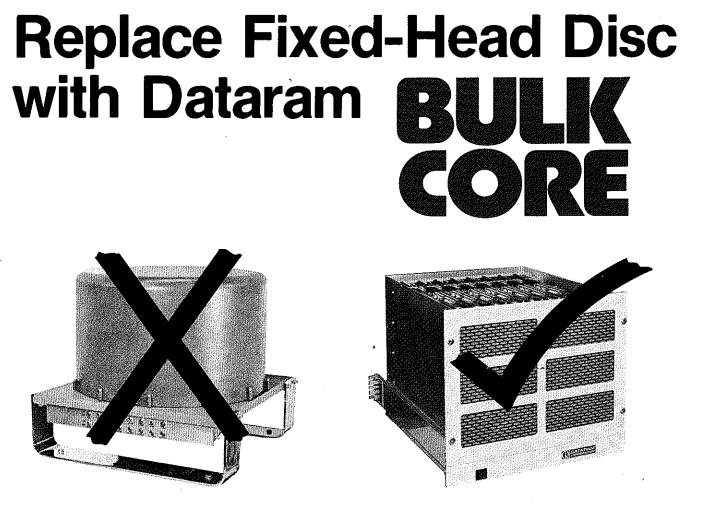
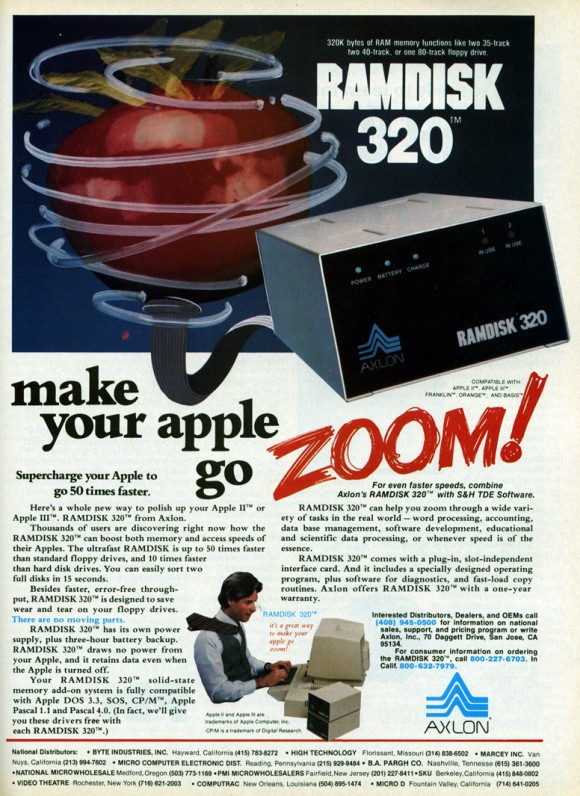

История твердотельных накопителей
Истоки SSD - быстро, дорого, не для всех
Строго говоря, SSD появились задолго до изобретения флэш-памяти. Ведь что такое, по сути, Solid State Drive? Это накопитель информации, который не содержит каких-либо механических компонентов. Таким образом, самым первым в мире SSD можно назвать творение корпорации Dataram с гордым названием Bulk Core, представленное в 1976 году. Стальное шасси габаритами 19 на 15.75 дюймов содержало 8 планок энергозависимой RAM-памяти, каждая из которых имела объем 256 килобайт. Девайс размером с хороший UPS (и, благодаря наличию резервных аккумуляторов, соответствующим весом) стоил на старте 9700 долларов США. Устройства нашли применение в промышленности и наукоемких отраслях, однако из-за дороговизны и ненадежности (все же риск потери данных был чрезвычайно велик) так и не стали массовыми.
В 1982 году SSD приходит на рынок персональных компьютеров. Компания Axlon специально для Apple II разрабатывает SSD-диск на RAM-чипах под названием RAMDISK 320, где число соответствовало имеющемуся объёму памяти. Поскольку накопитель создавался на базе энергозависимой памяти, в комплекте поставлялся аккумулятор для поддержания сохранности информации. Емкости аккумулятора хватало на 3 часа автономной работы в случае потери электропитания.
Flash-память — новая эпоха в развитии SSD
Все ранние модели были нерентабельны вследствие высокой стоимости, ненадежны из-за потребности в постоянном источнике питания и излишне громоздки в силу конструктивных особенностей. Иными словами, твердотельные накопители прошлого оказались лишены всех преимуществ современных моделей, что и объясняет их фиаско. Для создания же действительно революционного решения требовалась принципиально новая технология.
 В 1984 профессор Фудзио Масуока представил прототип энергонезависимой флэш-памяти на
международной конференции International Electronics Developers Meeting, где компания Intel быстро оценила перспективность данной разработки. Компания Toshiba,
в которой работал профессор Масуока, не считала Flash-память чем-то особенным, а потому удовлетворила просьбу Intel сделать несколько опытных образцов для
изучения. Проявленный компанией Intel интерес к разработке Фудзио, подтолкнул Toshiba выделить пять инженеров в помощь профессору на решение проблемы
коммерциализации изобретения. Intel, в свою очередь, бросил три сотни сотрудников на создание собственного варианта Flash-памяти.
В 1984 профессор Фудзио Масуока представил прототип энергонезависимой флэш-памяти на
международной конференции International Electronics Developers Meeting, где компания Intel быстро оценила перспективность данной разработки. Компания Toshiba,
в которой работал профессор Масуока, не считала Flash-память чем-то особенным, а потому удовлетворила просьбу Intel сделать несколько опытных образцов для
изучения. Проявленный компанией Intel интерес к разработке Фудзио, подтолкнул Toshiba выделить пять инженеров в помощь профессору на решение проблемы
коммерциализации изобретения. Intel, в свою очередь, бросил три сотни сотрудников на создание собственного варианта Flash-памяти.
Первыми коммерческими образцами флэш-памяти стали микросхемы Intel, выполненные по технологии NOR (Not-Or), производство которых было запущено в 1988 году. Матрицы данного типа представляли собой двумерный массив, в котором каждая ячейка памяти находилась на пересечении строки и столбца (соответствующие проводники подключались к разным затворам транзистора, а исток — к общей подложке). Однако уже в 1989 году Toshiba представила флеш-память NAND. Массив имел аналогичную структуру, но в каждом его узле вместо одной ячейки теперь располагалось несколько последовательно включенных. Кроме того, в каждой линии использовалось два МОП-транзистора — управляющий, расположенный между разрядной линией и столбцом ячеек, и транзистор заземления.
 Более высокая плотность компоновки помогла увеличить емкость чипа, но при этом усложнился и алгоритм чтения/записи, из-за чего пострадала скорость обмена
информацией. В связи с этим новая архитектура не смогла полностью вытеснить NOR, нашедшую применение в создании встраиваемых ПЗУ, тогда как NAND
использовали при изготовлении портативных накопителей (USB-флэшек, SD-карт). К слову, производство последних стало возможным лишь в 2000 году, когда
стоимость флэш-памяти достаточно снизилась и подобные устройства могли окупиться, а первой «ласточкой» стала модель DiskOnKey от IBM, объем которой
составлял всего 8 мегабайт. Немного, однако не будем забывать, что миниатюрный девайс размером с брелок успешно заменял собой восемь 3.5-дюймовых дискет.
Более высокая плотность компоновки помогла увеличить емкость чипа, но при этом усложнился и алгоритм чтения/записи, из-за чего пострадала скорость обмена
информацией. В связи с этим новая архитектура не смогла полностью вытеснить NOR, нашедшую применение в создании встраиваемых ПЗУ, тогда как NAND
использовали при изготовлении портативных накопителей (USB-флэшек, SD-карт). К слову, производство последних стало возможным лишь в 2000 году, когда
стоимость флэш-памяти достаточно снизилась и подобные устройства могли окупиться, а первой «ласточкой» стала модель DiskOnKey от IBM, объем которой
составлял всего 8 мегабайт. Немного, однако не будем забывать, что миниатюрный девайс размером с брелок успешно заменял собой восемь 3.5-дюймовых дискет.
Флэш-SSD для всех и каждого
 Предок современных твердотельных накопителей на основе флэш-памяти был выпущен
компанией Digipro еще в 1988 году. Первая версия Flashdisk в максимальной комплектации вмещала 16 МиБ данных и стоила менее 500$.
Предок современных твердотельных накопителей на основе флэш-памяти был выпущен
компанией Digipro еще в 1988 году. Первая версия Flashdisk в максимальной комплектации вмещала 16 МиБ данных и стоила менее 500$.
 Первопроходцем потребительского сегмента можно назвать выпущенный в 2003 году
Transcend IDE Flash Module, подключавшийся через 44-пиновый интерфейс Parallel ATA и имевший объем 128 или 512 мегабайт. Продукт позиционировался, как быстрый
и отказоустойчивый накопитель для работы в экстремальных условиях. Низкопрофильный модуль возвышался над разъемом всего на 2 сантиметра, благодаря чему мог
подключаться напрямую, без использования шлейфа.
Первопроходцем потребительского сегмента можно назвать выпущенный в 2003 году
Transcend IDE Flash Module, подключавшийся через 44-пиновый интерфейс Parallel ATA и имевший объем 128 или 512 мегабайт. Продукт позиционировался, как быстрый
и отказоустойчивый накопитель для работы в экстремальных условиях. Низкопрофильный модуль возвышался над разъемом всего на 2 сантиметра, благодаря чему мог
подключаться напрямую, без использования шлейфа.
 Первый SATA SSD появился всего через год: Adtron Corporation представила
2.5-дюймовый накопитель Flashpack, однако его рыночная стоимость, в зависимости от модификации, достигала 11 200 долларов. Переломить ситуацию с точки зрения
ценовой политики удалось Samsung, предложившей покупателям устройство с незамысловатым названием Flash SSD объемом 32 гигабайта «всего» за 700 долларов! И
пускай его все еще сложно было назвать по-настоящему массовым, энтузиастам, готовым раскошелиться за прирост производительности топового ПК, такой вариант
пришелся по вкусу.
Первый SATA SSD появился всего через год: Adtron Corporation представила
2.5-дюймовый накопитель Flashpack, однако его рыночная стоимость, в зависимости от модификации, достигала 11 200 долларов. Переломить ситуацию с точки зрения
ценовой политики удалось Samsung, предложившей покупателям устройство с незамысловатым названием Flash SSD объемом 32 гигабайта «всего» за 700 долларов! И
пускай его все еще сложно было назвать по-настоящему массовым, энтузиастам, готовым раскошелиться за прирост производительности топового ПК, такой вариант
пришелся по вкусу.